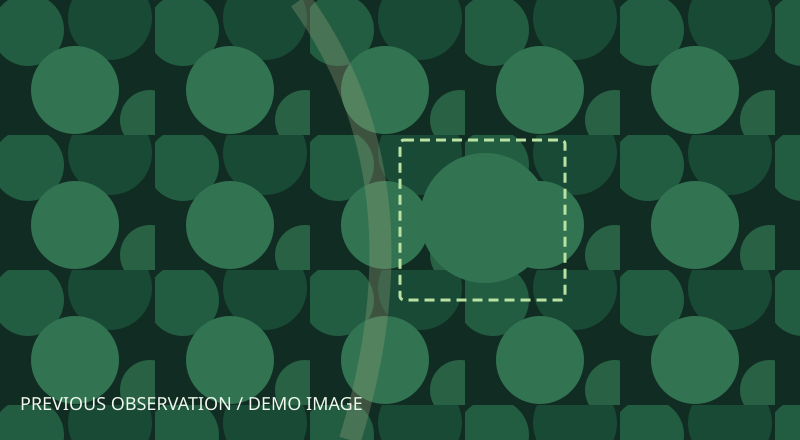
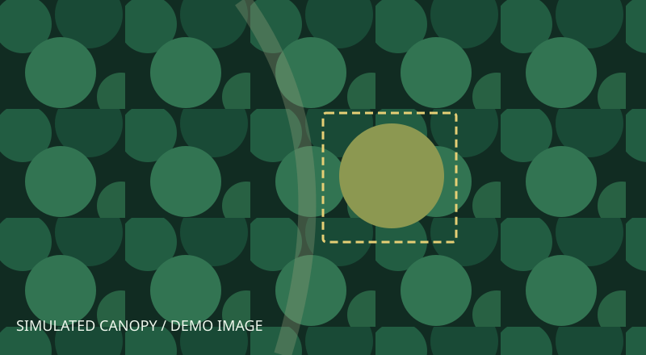

現場の情報を残す
画像、位置、撮影日時、高度、撮影角度を観測結果に紐づけます。
森林自律保全システム
AIとドローンで観測を重ね、森林の変化を捉える。
判断が難しい場所は、もう一度見に行く。
FORESTは、継続する森林管理を目指すプロジェクトです。
DCON 2027 に向けて開発中
WHY FOREST
広い森林を、繰り返し人の目で確認するには時間がかかります。位置と日時を持つ観測を蓄積し、変化と判断の不確かさを次の調査につなげます。
画像、位置、撮影日時、高度、撮影角度を観測結果に紐づけます。
同じ地点の過去と現在を並べ、判定の変化や観測履歴を確認します。
AIの信頼度が低い観測から再観測依頼を作成。高度や角度を変える調査につなげます。
INTERACTIVE DEMO
操作して、再観測までの流れを確認できます。
画像・数値はデモです。実機やVPSには接続しません。


調査区画 A-17 · 同じ地点の観測を比較
信頼度が低いため、別の高度・角度から再観測を要求します。
操作待ち · ブラウザー内のデモ
SYSTEM DESIGN
画面、データ管理、GPU学習、現場での推論を分離。デモの先に、実際の観測を接続できる構成を育てています。
観測結果・調査依頼・機体情報
観測と依頼の管理・保存
現場でのAI推論・機体制御
PCのRTX 5050でGPU学習 → モデル・結果をVPSへ返却
合成データによる学習・転送を検証済み。森林画像での性能検証は今後の課題です。
DEVELOPMENT STATUS
画面上の体験と基盤を整え、森林の実データと実機による検証へ進めています。
気象情報、観測履歴、時系列比較、再観測依頼、活動ログ。機体・森林画像はデモデータです。
Go APIとPostgreSQLによる管理基盤。公開サイトと運用画面を分離しています。
VPSからのジョブ指示、PCでの合成データ学習、学習結果のVPSへの返却を確認しています。
対象の絞り込み、現場画像の収集・ラベル付け、AI性能評価、Jetson・ROS 2・PX4の連携と飛行検証。
TWO SEPARATE SPACES
このページはFORESTの仕組みを伝える公開サイトです。実際の管理画面はVPSで提供し、APIに接続します。ここでのデモ操作が調査機を動かしたり、運用データを書き換えたりすることはありません。